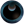
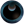

Introdução
Os membros do clã Malefic são conhecidos por serem misteriosos. Eles nunca conversam sobre sua vida pessoal com estranhos e controlam os Pokémon do tipo Ghost,  Dark e Poison.
Os membros do clã Malefic são conhecidos por serem misteriosos. Eles nunca conversam sobre sua vida pessoal com estranhos e controlam os Pokémon do tipo Ghost,  Dark e Poison.
Acesse a página de Tasks do clã Malefic para conferir os requisitos necessários em cada um dos Rankings.
O bônus máximo do clã é aplicado ao completar as tarefas do Rank 5. Abaixo estão as porcentagens de bônus adquiridas:
Ghost: Atk 25%, Def 25% Poison: Atk 28%, Def 28% Dark: Atk 28%, Def 28%Tier é uma classificação comum entre os Pokémon, indicando não apenas a raridade deste dentro do jogo, mas também qual executará melhor uma função, contanto que a comparação seja realizada entre dois Pokémon de mesma função. O Tier e a Função de um Pokémon pode ser conferido na Pokédex (Atalho Shift + D). Caso deseje ler mais sobre, acesse a página Tier e Funções ou Tiers (listagem) para conferir a listagem de Tier de todos os Pokémon.
Para facilitar a leitura desta página, a tabela a seguir contém a legenda de todas as Funções, PvP e PvE disponíveis no jogo.

Abaixo estão listados todos os Pokémon do clã Malefic e suas respectivas funções, separados por Tier.


*Observação: Apesar de receber o bônus de clã Malefic, os Pokémon Mega Venusaur, Alolan Raticate, Mega Gyarados, Mega Tyranitar e Shiny Golurk não entram na contagem de Pokémon deste clã, por terem seu uso exclusivo em outros clãs no PvP.
**Observação: Os Pokémon Shiny Tentacruel e Mega Tyranitar são considerados tanto PvP como PvE.

Observação: Os Pokémon T1H têm a força de T1C fora da Nightmare World e são acima dos T1C dentro dela ou pelo menos possuem um diferencial perante os demais Pokémon. São balanceados exclusivamente para conteúdos PvE e não podem ser utilizados em duelos PvP.


*Observação: O Pokémon Mega Beedrill é dedicado a outro clã, apesar de receber bônus deste clã pela tipagem.
**Observação: Apesar de receberem o bônus de clã Malefic, os Pokémon Dark Pichu, Aegislash e Dragalge não entram na contagem de Pokémon deste clã, por terem seu uso exclusivo de outros clãs no PvP.
***Observação: Os Pokémon Tyranitar e Mimikyu são considerados tanto PvP como PvE.


*Observação: Os Pokémon Shiny Beedrill, Nidoqueen, Crobat e Roserade são dedicados a outros clãs, apesar de receberem bônus deste clã pela tipagem.

Rotação Mid-Late Game: Shiny Qwilfish (Offensive Tanker), Shiny Arbok (Offensive Tanker), Alolan Muk (Burst Damage Dealer), Muk (Burst Damage Dealer), Seviper (Burst Damage Dealer), Nidoking (Burst Damage Dealer).


Rotação Ghost+Dark* Mid-Late Game: Mightyena (Offensive Tanker), Cofagrigus (Offensive Tanker), Banette (Burst Damage Dealer), Zoroark (Burst Damage Dealer), Gengar (Burst Damage Dealer).
Rotação Ghost* Mid-Late Game: Cofagrigus (Offensive Tanker), Mismagius (Offensive Tanker), Banette (Burst Damage Dealer), Gengar (Burst Damage Dealer), Mimikyu (Burst Damage Dealer).
*Observação: Essa rotação encontra-se incompleta até o momento. Resta 1 Pokémon DPS. O jogador pode adaptar o sexto Pokémon faltante na rotação conforme desejar.

Observação: A exclusividade é aplicada apenas em conteúdos PvP. No PvE, o uso é liberado para todos os clãs.
Para obter um Shiny Nidoking, fale com a NPC Wanda, localizada na área do Clã Malefic, no Trade Center.

Para obter um Shiny Nidoqueen, fale com a NPC Wanda, na área de Malefic, na resistência de Cerulean.

Abaixo são apresentadas as efetividades dos Pokémon deste clã, considerando apenas aqueles que possuem um elemento. A efetividade pode mudar caso o Pokémon possua dois elementos ou possua alguma resistência à algum elemento, como é o caso do Cofagrigus, que possui a passiva Mummy, permitindo que ganhe resistência contra ataques do tipo Ghost (0,5x).
A efetividade de um Pokémon pode ser conferida na Pokédex ou realizando uma busca na página Pokémon (uso do Ctrl+F recomendado). Clique no ícone do elemento desejado para conferir a tabela de efetividade deste clã.
Poison Ghost DarkMais informações poderão ser adquiridas acessando a página Efetividades.

Página Principal